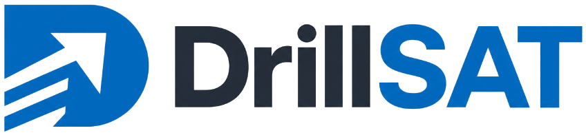
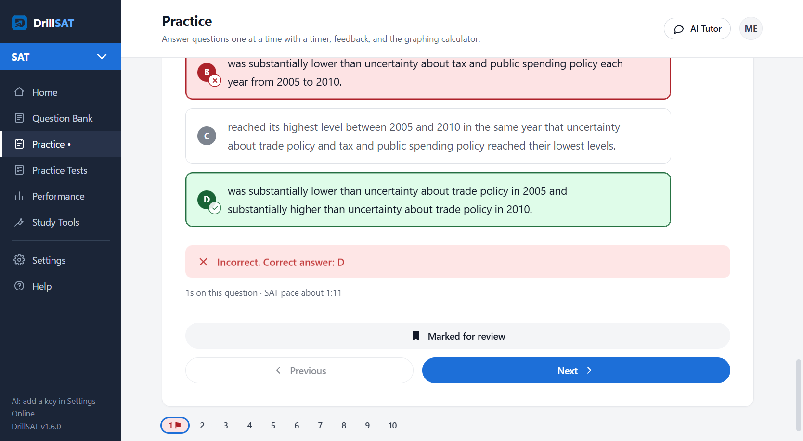
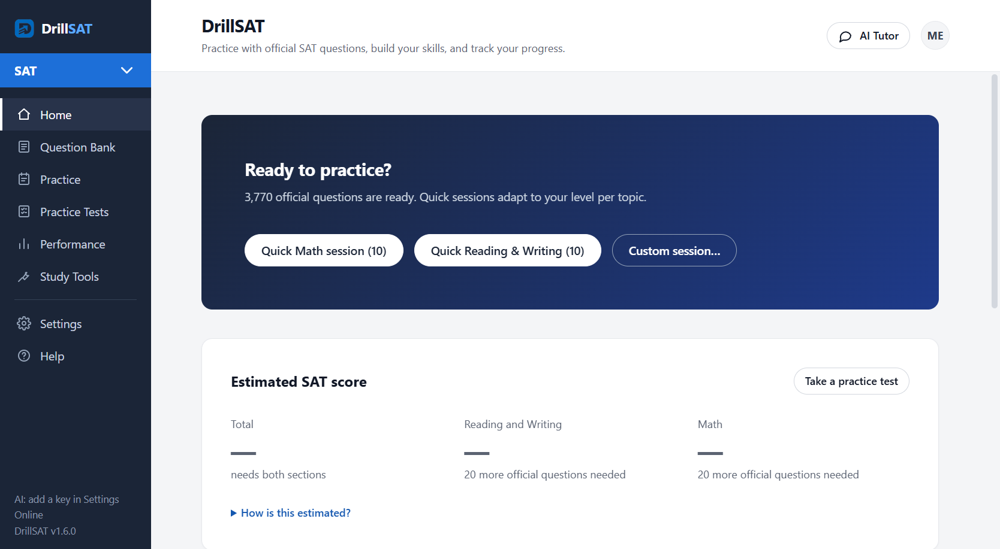
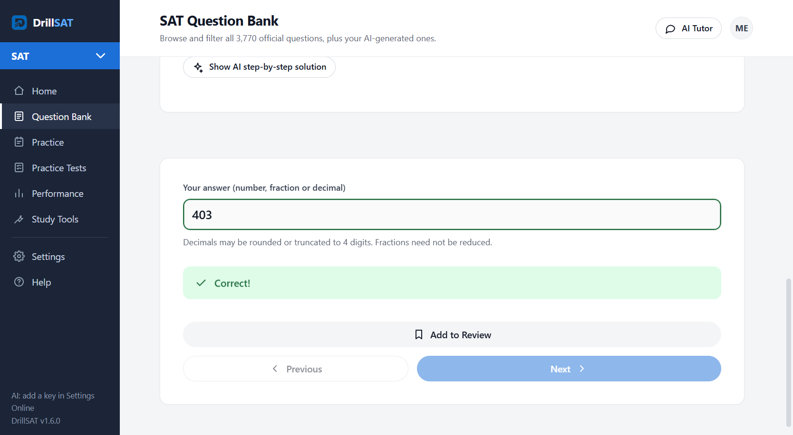
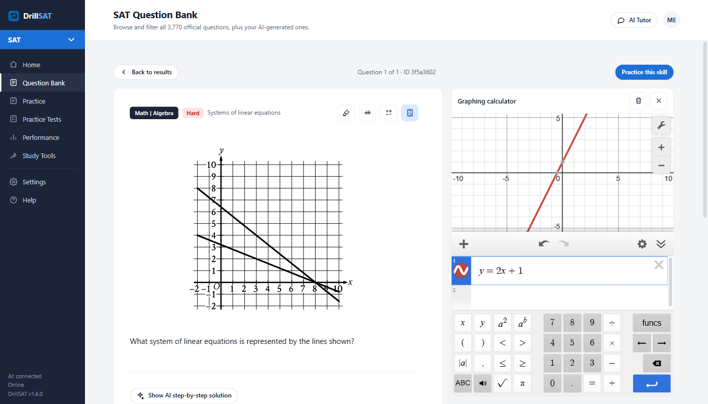
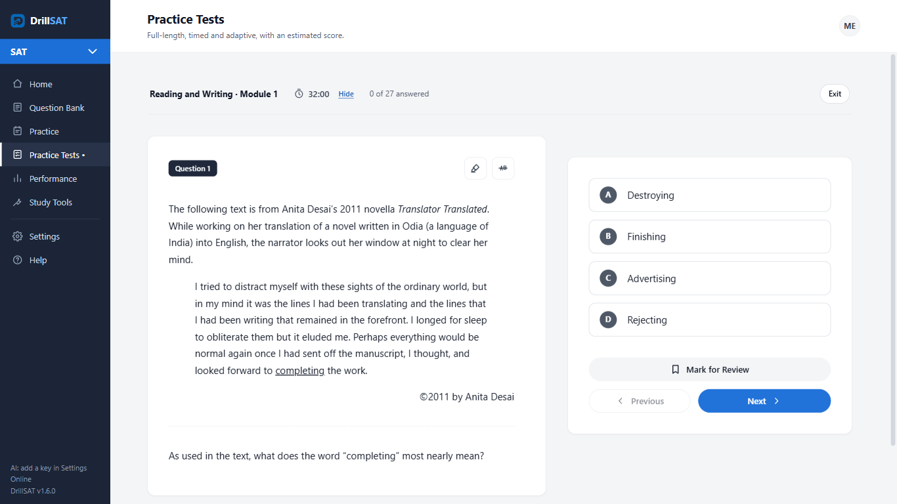
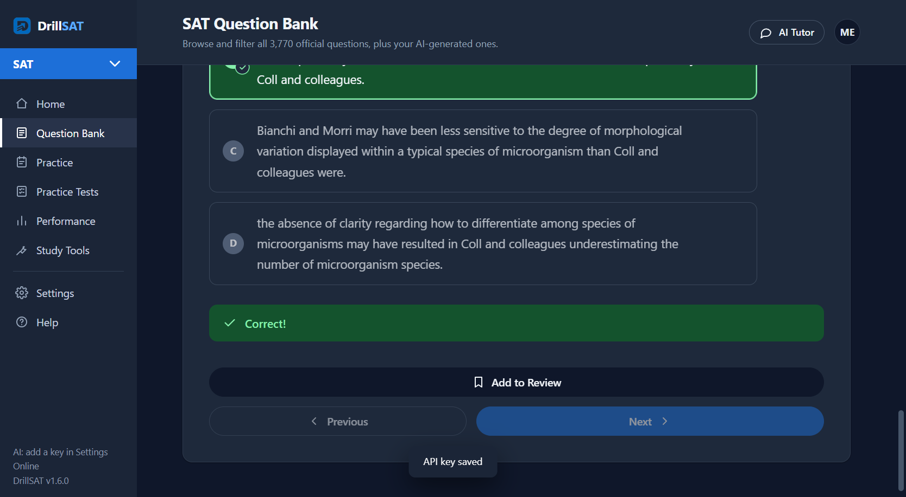

All 3,770 official questions with answer keys and explanations, practice sessions that adapt to you, progress tracking, an AI tutor that uses your own API key, and the same Desmos graphing calculator as the digital SAT. Everything except AI and the calculator works offline.
Download for WindowsLatest release · installer (x64)Standalone app, nothing else to install. No account, no telemetry, no data leaves your computer except requests to the AI provider and Desmos you configure.

The layout follows College Board's own question bank, so nothing feels different on test day.
1,925 Math and 1,845 Reading & Writing questions, filterable by domain, skill, difficulty and format, searchable by keyword or ID. Math renders as real notation, figures and tables included.
One question at a time with per-question and session timers, mark for review, multiple-choice and grid-in answers checked with the official rules, instant feedback with the official explanation.
Each topic moves up after a run of correct answers and down after misses. Override any topic by hand, or pick a fixed or mixed difficulty for a session.
The embedded Desmos graphing calculator in a resizable, collapsible panel on every Math question. Its state is kept per question. Bring a free Desmos API key.
A tutor panel that knows the question you are on and will not spoil the answer, step-by-step solutions on request, and a session review with weak topics and a recommended next session. Anthropic or any OpenAI-compatible API, your key, stored encrypted.
Generate fresh questions in the official SAT format for one topic, several, or whole domains at once. Each one is checked against official College Board items for format and difficulty, solved independently to confirm a single correct answer, and clearly labelled as AI-generated.
Timed and adaptive like the digital SAT, with Bluebook-style tools: answer eliminator, highlighter, reference sheet and Desmos.
A score range built from College Board's own score band for every official question you answer, calibrated to College Board's published precision.
Questions you miss come back after 1, 3 and 7 days until you get them right.
Accuracy by topic, domain and difficulty, time per question, session history and day streaks, all stored locally.
A–D or 1–4 to answer, Enter to check and advance, arrows to move, M to mark, G for the calculator, T for the tutor.
Plain Electron with no WebView2 or native modules, so the same build runs on Linux through Wine. Light and dark themes.





The question bank is included; keys are optional.
Use the installer, or the portable .exe if you prefer not to install anything. No runtime to install separately.
Settings → AI: choose Anthropic (Claude) or an OpenAI-compatible endpoint, paste your key, click Test connection. The key is encrypted with Windows secure storage and only ever sent to the provider you picked.
Request a free key at desmos.com/my-api and paste it in Settings → Calculator. The calculator loads from desmos.com, so it needs a connection.
Use the portable .exe.
wine DrillSAT-1.6.0-portable.exe
# blank window? add the flags the app would set itself when it detects Wine:
wine DrillSAT-1.6.0-portable.exe --disable-gpu --no-sandboxDetails and known workarounds are in the README.